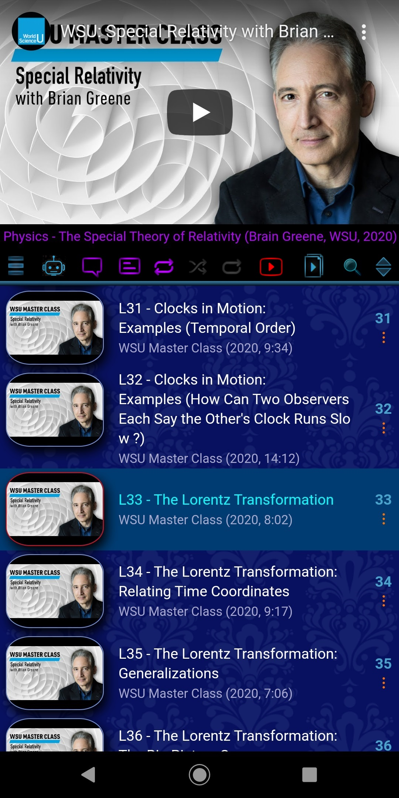
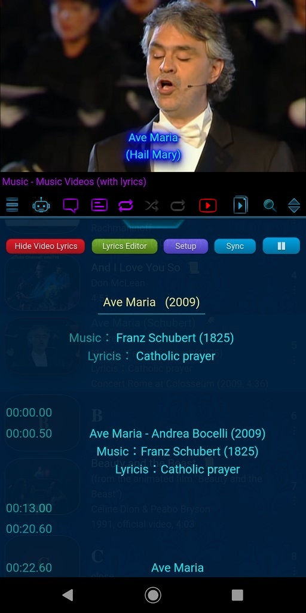

Read-out input text in any language supported by the Text-To-Speech (TTS) Engine installed on your phone before a
media entry starts or when it is playing
Display hidden message/lyrics in the playlist area when a media entry is playing
My Multimedia Library is a Multimedia Playlist Management System (MPMS), an
ad-free, virus-free,
multi-purpose software tool for mixing different types of media content (text, image/photo,
text-to-speech, audio, video, and webpage) found on the internet into a playlist for synchronized playback. In short, it serves as an
Internet Information Organizer for educational and entertainment purposes.
A playlist isn't just a list of organized songs, pieces of music,
or videos. It can also be a great and powerful way for collecting and grouping essential, relevant, useful, and timely information. With
playlists, we can organize, categorize, and share knowledge on any given topic, and provide consistent information to everybody.
For the purpose of sharing information among users, My Multimedia Library doesn't save any
media contents onto your device except your input text and links to the media files and webpages, so the App can also be viewed as a tool for
creating different types of indexes to provide fast and easy access to the world's largest knowledge base - the internet.
My Multimedia Library not only supports hyperlinks to
websites or highlighted text in webpages from anywhere in the playlist, it also supports links between
entries within the same playlist and entries in different playlists.
【 History 】
This small piece of software (around 5MB) was born accidentally and experimentally in 2019. Unlike many other money-driven software programs,
it's creation is driven solely by love, and aims to create a better world using the most up-to-date technology.
With suitable and practical arrangements of media files,
website contents, user-written text, and Text-to-Speech in a playlist, this piece of software becomes a great and powerful self-learning tool
for growing knowledge in an effective and efficient way.
My Multimedia Library supports a very effective way of learning (memorization) through the
repetition of sounds using Text-to-Speech and 3 looping switches: the
Circulating switch the
Shuffling switch and the
Repeating switch . Now users can create
"chanting" playlists (e.g., times table or mathematical formulas) in any language, along with "Question (with multiple choices, if preferred) &
Answer" playlists, with time intervals in between for memorizing quizzes.
With the help of the Text-to-Speech facilities, it also becomes a very powerful
audio book reader and Essay/Poem/Quote reciter provided that user
knows how to put different lengths of silent intervals in between words, sentences & paragraphs.
In fact, the project was originally initiated for helping students to collect and organize studying materials found on the internet,
and for helping youngsters to create old songs jukebox for the computer-illiterate seniors. In the long run, this project may become a tool
to help human beings maintain creativity for preventing them from becoming slaves of AI robots, or even save them from extinction in the
process of evolution. (Are you kidding ? NO ! I am serious, and it is also a warning.)
【 Children Education 】
Children are very effective copying machines. The most important
thing is to decide what should be put into their libraries so that they will become creative, empathetic and knowledgeable when they grow
up. This App is built for you and your children to do such an experiment.
【 Music Lovers 】
Great news to music lovers: inside My Multimedia Library,
there is a built-in Karaoke Simulator which allows time-synced
lyrics to be displayed on video in real-time. That means, with the help of the current technology, user can now enjoy Karaoke on TV with
just a smartphone in landscape mode.
There is also a built-in Scrolling Lines Karaoke Simulator in portrait mode for
seeking, timing & editing
lyrics lines in real-time while the video is playing. With the help of music video without vocal, learning to sing is much easier than
ever.
【 YouTube Fans 】
YouTube is a treasure house, but it is also a garbage can. This
App is built to help you find the pearls in the trash, and keep them in your jewelry box as long as you like. You can always watch
the videos with the official YouTube app if preferred by clicking on the "Super Play" button when the videos are playing. This App takes NO responsibility for your decisions
about what software you choose to watch YouTube videos, and how you reward the pearls makers.
With accurate starting and ending time, My Multimedia Library can also become a
Video Partitioner without any real video editing. That means individual songs on an album video can be
easily extracted and rearranged for playback in any sequence you like.
If you see a blurry video, or a slow playing jagged video, or a blue line at the right side of the video in some brands of smartphones,
it is probable that YouTube is sending a low quality version (should be 480p or lower) of the video to you. Raise the quality of the video
by the Setup button
under the YouTube Video Progress Bar.
【 Interface Design Enthusiasts 】
In
My Multimedia Library, each playlist is actually a webpage and an HTML command editor.
Especially in the Freestyle Entry, technical users can almost totally control the appearance of the entry including its background
(For details see 2.3 "Freestyle entry design" from the playlist "System - Operation Tips & Tricks" in the
app).
【 Copy Rights 】
My Multimedia Library isn't a content provider. Although there
are many fine-tuned categorized sample playlists in the
Public Playlist Library for your reference (and
can only be used for educational purpose), My Multimedia Library makes NO profit from it. All copy rights of the contents in any playlist
belong to their content providers, and all input text and the arrangement of contents in any playlist belong to the playlist
creator.
Warning : All playlists in My Multimedia Library should ONLY be
played privately for your own use, and materials used in the playlists should NOT be shown publicly unless you are very sure that you do NOT
violate or infringe anything.
【 Newbies 】
If you are new to this app, be sure you do these 3 things :
1.
Take a cup of tea or coffee and be relaxed. Nothing is difficult !
2.
Click this button
in the Main Menu to go to the
Private Playlist Library, and
then click this button
in the Playlist Operation Menu
to go to the Public Playlist Library
(using your finger to swipe the screen from left to right or vice versa can do the same thing). Now, select
English as your preferred language and download the demo playlists that you are
interested from the first category【 Demo Playlists 】to your private playlist library
(double-click an entry or click the Library Go
button , you can enter a category or
download a playlist).
With the help of the multi-purpose "Super Play" button
, you have the options to visit a website, view highlighted text in a webpage,
zoom in on an image/photo in your default browser, or watch videos directly in the official YouTube App
This user guide presents an overview of the application’s features and gives you step-by-step instructions for completing a variety of
tasks.
【 Basics 】
Basic features of a playlist :
1. There are 4 types of entries that can be added into the playlist:
text, image,
video, and free-style. All entries (except video
entry) have to be added into the playlist by
of copied entries via
from the same (or another) playlist, and can only be
modified with the built-in
Media Information Editor . Video entries can also be added into the
playlist via the App's YouTube Search Engine or by
of a valid YouTube video link.
2. When a new playlist is created, 3 demo media entries (video
entry, image entry and text entry with a link to this User Manual)
will be added to the playlist automatically, and you can delete any one of these entries when there are more than 1 entries in the
playlist.
3. With the
Media Information Editor , text entry can be changed to
image entry and vice versa. Text/image entry can be changed to free-style entry and vice versa. Video entry can also be changed to text/image
entry, but NOT the opposite.
4. Duration of a video entry is controlled by delay time, starting time and ending time, while
the duration of a text/image/free-style entry can only be controlled by delay time.
5. All entries have an audio link. A valid audio link will trigger the audio player to stop the
previous audio and play the current audio immediately after loading. An audio link with an 'O' or 'o' tells the player to loop the current
audio, an audio link with a '*' tells the player to continue to play the current audio, and a blank audio link will stop the player
immediately.
6. A text entry has a webpage link. If the link is valid, user can visit a website or view
highlighted text in a webpage with the
Super Play button . This App also
supports any hyperlinks in the playlist for visiting webpages.
7. There are 2 built-in Karaoke simulators: the Overlay on Video
Simulator (very accurate) and the Line Scrolling Simulator (less accurate). The keyword
"[offset=0.0]" in the Message area of a video entry will activate
the Line Scrolling Karaoke Simulator automatically (there is a very useful function for learning to sing
in this Simulator: when you click any lyrics line, it will seek for that line and replay the line).
8. There is also a built-in real-time lyrics Editor where lyrics can be timed with just a click
on the lyrics lines while the video is playing.
9. Use the button in
the Line Scrolling Karaoke Simulator to activate the Overlay on Video
Karaoke Simulator. There are many background and lyrics
line displaying styles available (click the video to find them when lyrics are displaying on the video), and all lyrics settings can be
saved for each video entry.
10. There are 2 search modes
available: one is for the current playlist
(that means user can just say the name of a song with the mic of the soft keyboard on the phone, the song will be played immediately in a
music video playlist). Another one is for YouTube video search. Search modes can be set in
.
11. Playlist can be shared via E-mail, Google Drive, Dropbox, GitHub or Bluetooth (for small-sized
file), and can be downloaded to the App by a valid internet file path (URL) in the
Puplic Playlist Library .
12. All audio, image and playlist files from Google Drive, Dropbox, GitHub or any other websites
with a valid link are supported.
13. Users can set subtitles display for videos in a specific language as default language in
.
14. Current Text-to-Speech settings in
can also be saved and cleared in the
Media Information Editor for each media
entry (especially useful for auto essay/poem/quote reciting). In order to make your phone to speak, Google's Text-to-Speech engine,
Speech Recognition & Synthesis by Google LLC may have to be
installed.
15. Current audio & video Volume in
can also be saved and cleared in the
Media Information Editor for each media
entry (especially useful for background music of non-video entries).
16. Image & video transition animation including Fading, Zooming & Rotation can be set in
(setting animation duration to zero second can disable
animation).
18. Although it is highly improbable to lose a playlist unless the App is uninstalled, you should
still backup your important and valuable playlists via E-mail / Google Drive / Dropbox / GitHub by the
Playlist Share/Upload button
of the
Playlist Operation Menu in the
Private Playlist Library, and save each playlist
with a unique and meaningful file name for your own reference. In fact, no matter what file name is used for your saved playlist, the App
will only take the name stored inside the playlist as the default playlist name after it is downloaded.
【 Possible Applications 】
(only limited by your imagination)
My Multimedia Library is a multi-purpose software. What
application it is depends on what information you put into the playlist. If you put passwords into it, it will become your password reminder.
If you put date and text into it, it may become your electronic multimedia diary. If you put music video and time-synced lyrics into it, it
will then become a real-time Karaoke Simulator.
Applications
Media entries required
Controls required
Research & studying notes / lecture / data presentation organizer
any
any
Jukebox
music videos / text entry with audio / image entry with audio /
video entry (muted) with audio
Shuffling switch on,
text-to-speech (optional) with delay time, lyrics (optional)
Jukebox for medley
same as Jukebox
same as Jukebox + video starting & ending time controls
Karaoke simulator / Time-synced lyrics editor
music video / time-synced lyrics
video starting & ending time controls + text-to-speech (optional) with delay time
Calendar / Memo pad / Notebook / Timetable / Reminder
text entry
delay time control with all 3 playing style switches off, text-to-speech (optional),
message/lyrics (optional)
Language learning packs creator/ Audio book generator & player / Auto essay/poem/quote reciter
text-to-speech (optional), audio for background music (optional), message/lyrics (optional)
Photo/image albums (slideshow)
same as Painting exhibition
same as Painting exhibition
【 The Real Thing 】
Below is what you will see when the App starts :
Portrait mode :
When the phone is in Portrait mode, the screen is separated into 3 parts:
Media Display area,
Menu area, and
Playlist area. In the Playlist area, you will see the media thumbnails, media titles and the
media numbers together with the Media Operation
Menu buttons " ⋮ " for operating media entries as
shown in the pictures below.
Landscape mode :
When the phone is in Landscape mode, media is displayed in full screen.
Media Operation Menu
Redefine YouTube video with a new title, an arbitrary starting time, ending time, and delay time for your
own use
Move, Delete, Copy, Paste media entry and Edit media information in a playlist

Example 1 - Partitioning of a video
There is a great physics course about "The Theory of Relativity" (in-depth mathematical version) presented by Brian Greene
from WSU, which is compiled into one video of length more than 11 hours. Of course, it is not that efficient to study this course
with such length. Using this App, the video can be partitioned into a 71-lectures playlist with appropriate titles without doing
any real video editing. So, with the playlist, you can now study any part of the course at any time you like.
For beginners,
the first thing to learn is how to Add a video into the playlist. There are two ways to do
that :
1. Copy the video link using the Share button
and the Copy
Link button when you are watching the video
in the official YouTube app, and then the
video link at a selected position of the current playlist.
2. Add videos in batches from the App's
Search Engine (we will discuss it in detail
below).
To partition a video, you need to use the and the
functions to duplicate the video first, and then
fill in appropriate information (such as titles, starting time, ending time etc. ...) for the partitioned videos using the App's
built-in Media Information Editor
The above funtions can also be used to fix careless mistakes made by the video providers, and we did manage to replace a misplaced
lecture video in another 14-lectures course, also by Brian Greene about "The Theory of Relativity" (non-mathematical version), with
a correct lecture partition from the course above.
All the courses mentioned here can be downloaded from the
Public Playlist Library via the
Playlist Operation Menu. There are also
many other similar sample playlists partitioning videos for studying science, fine arts, history, operas & musical albums, countries
& places, languages, etc... in the Public Playlist Library.
Functions provided in the Media Operation Menu are as follows :
- Move the selected media entry from its position to another position in
the current playlist. Input 1 as the target position if you want to move the media entry to the top of the playlist, and input a
number greater than the total number of media entries if you want to move the media entry to the end of the playlist.
- Modify the media information
of the selected media entry in the App's built-in
Media Information Editor
- Remove the selected media entry from the current playlist (For
technical reasons, deletion of media entry is NOT allowed if the playlist contains only 1 media entry, and deletion of playlist is
NOT allowed if your library contains only 1 playlist).
- Copy the media information from
the selected media entry of the current playlist (The Copy operation is performed automatically
before the Deletion operation). - Paste the copied media
information (equivalent to Add media entry) to the position just after the selected media entry
of the current playlist.
- Exit the menu (user can also exit the menu by pressing any part of
the menu except the buttons).
Media Information Editor
Read-out input text in any language supported by the Text-To-Speech (TTS) Engine installed on your phone before a media
entry starts or when it is playing
Display hidden message/lyrics in the playlist area when a media entry is playing
Example 2 - Making your phone say anything you want in a selected
language
Just input text in the Speech input area, and select a
Language and a Region code, you can turn the App ino a text
reader easily.
Set a Delay time for the media entry if you want to end the speech before the media entry
starts.
Note 1 : You may need to install the Google's Text-to-Speech engine,
Speech Recognition & Synthesis by Google LLC from
Google Play Store if you can't find a suitable languge.
Some of the available Language-Region pairs from Google are :
Language
Region code
Language
Region code
Cantonese
Cantonese
HKG
Dutch
Dutch
NLD
English (Australia)
English
AUS
English (UK)
English
GBR
English (US)
English
USA
French
French
FRA
German
German
DEU
Italian
Italian
ITA
Japanese
Japanese
JPN
Korean
Korean
KOR
Mandarin (China)
Mandarin
CHN
Mandarin (Taiwan)
Mandarin
TWN
Portuguese
Portuguese
PRT
Spanish
Spanish
ESP
Thai
Thai
THA
Vietnamese
Vietnamese
VNM
...
...
...
...
...
...
Note 2 : In order to hear the speech, the Speech on/off switch
in the
Main Menu must be turned on.
Note 3 : The Rate and the Pitch
of speech can be set in via the
System Menu button in the
Main Menu.
Every media entry block has a hidden message input for displaying special information in HTML format, such as an essay for essay reading, a
poem for poem reciting, or lyrics (including time-synced lyrics) for music video.
Emoji 📜 indicates that a hidden message exists, and the hidden message board will be raised to cover the entire playlist area
when the media entry is playing.
Emojii 🎤 indicates that time-synced lyrics exists, and the hidden message board with a Karaoke simulator will be raised.
Example 3 - Displaying lyrics (with no timestamp) for music
videos (time-synced lyrics will be discussed in the section of
Karaoke Simulator).
Text input in the Message input area will be displayed when the video is playing. An
example of this is the music video of the song "Ave Maria" performed by Andrea Bocelli at the left and above.
Note 1 : To view the hidden message/lyrics, the
Message/Lyrics on/off switch
in the
Main Menu must be turned on.
Note 2 : The hidden message board can also be closed with the
Close Message Board button
at the top of the board.
Main Menu
Control playing style: Looping, Shuffling and Repeating
Turn speech and message/lyrics display On or Off
Change the aspect ratio to maximize the video or image/photo size on the screen in portrait mode
Example 4 - Turning your playlist into a jukebox
If your playlist is a playlist of music videos, your playlist is already a jukebox. By default, your playlist will be
played in the Looping playing mode
. If you turn on the Shuffling
switch or the Repeating
switch , your playlist will be played in the
Shuffling (non-repeating random) playing mode or the
Repeating playing mode. The continuation of playing media entries will stop when all the 3
switches are off.
Note 1 : To avoid disturbing people around you, the App is muted when it is launched. Click
the Unmute button at the top before you start to do anything.
Note 2 : User can also set all the videos to play only for the first 15, 20, 30, 45 or 60
seconds in via the
System Menu button
in the Main Menu.
Functions provided in the Main Menu are as
follows:
- Shuffling (non-repeating random) playing mode on/off
switch
- Repeating playing mode on/off switch
- A multi-purpose button for visiting a website or viewing
higlighted text in any part of a webpage (text & free-style entry), zooming in on images/photos in your default browser (image
entry), or watching videos directly in the official YouTube app if the current playlist isn't a
Private playlist (Media entries in private playlists are NOT allowed to copy and share. Also,
some of the playlists in the
Public Playlist Library may be private
playlists).
- Go to Private Playlist
Library
- Go to Search Mode
- Aspect Ratio switch for maximizing the video
or image/photo size on the screen in portrait mode. There are 3 aspect ratios: 16:9 standard, 4:3 old TV, and 9:16 vertical.
Search Mode
Search for keywords in the current playlist
Search for YouTube videos with keywords
Add selected videos in batches from search results to the current playlist
There are 2 search modes : by default, user can search for keywords in the current playlist. That means user can just say the
name of a song with the mic of the soft keyboard on the phone, the song will be played immediately in a music video playlist. User
can also set to search YouYube videos with keywords through
via the System Menu button
in the Main Menu.
Example 5 - Adding videos in batches from the App's Search Engine to the current
playlist
First, set to search YouYube videos in . After entering the
Search Mode using the
Search Mode button in the
Main Menu, you will see the
Search Menu as shown above. Enter your search keywords in the text input area, and the
search result will be displayed just under the menu when the Search button
is clicked. Add your favourite videos to the buffer area using
the rightmost "Add" button of each entry. Once you quit the
Search Mode with the Back button
, all videos in the buffer area will be appended to the current
playlist.
The search is done by page, and it offers about 50 results each page. You can use the
Next Page button
and the Previous Page button
to get the search results of the next and the
previous page after the first page is displayed.
Note 1 : In order to save resourses, there is daily quota limiting the number of searches. This
quota may be increased if required.
Note 2 : If users have difficulty in using the search engine, they can always use
google search instead. Use YouTube's Share button
and the
Copy Link button , and
then the copied video link at a selected position,
videos can also be added one by one into the playlist.
Private Playlist Library
Create new playlist, Delete playlist, and Modify playlist names
Share playlist with other handphones via E-mail, Google Drive, Dropbox, GitHub or Bluetooth
Example 6 - Building your own playlist library
After entering the Private Playlist Library using the
Private Playlist Library button
in the Main Menu, you will see the
Playlist Operation Menu as shown above. You can Add
playlist, Delete playlist and Modify playlist name using the
Add Playlist button
the Delete Playlist button
and the
Modify Playlist Name button
. Since playlist names are listed automatically
in alphabetical order, if the names are carefully designed and only related media entries are put into the same playlist, you will
be able to build-up a "well-constructed" media library easily.
Example 7 - Sharing playlist via
E-mail, Google Drive, Dropbox or GitHub
Playlist can also be shared via E-mail / Google Drive / Dropbox / GitHub (default) or
Bluetooth. In the E-mail sharing mode, you can use the
Playlist Share/Upload button
and the Playlist
Download button to
share/upload and download playlist (the download function is obsolete in android 11 or above due to Google's new "file scope"
policy). For Google Drive, Dropbox or GitHub users, they also use the
Playlist Share/Upload button
to share/upload playlist, but they have to download
playlist in the Public Playlist Library.
(We will discuss the Bluetooth Sharing Mode
in detail below).
Note 1 : Playlist sharing mode can be set in
via the
System Menu button
in the Main Menu.
Note 2 : From our experience, it is highly improbable to lose a playlist unless the App is
uninstall. But if you have an important and valuable playlist, you still can backup your playlist via E-mail / Google Drive /
Dropbox / GitHub and save it with a unique and meaningful file name for your reference. In fact, no matter what file name is used
for your playlist, the App will only take the name stored inside the playlist as the default playlist name after it is downloaded.
Functions provided in the Playlist Operation
Menu are as follows :
Share/Upload playlist via E-mail / Google Drive / Dropbox / GitHub or set the
handphone to be a Bluetooth Server if Bluetooth is the current playlist sharing
mode
-
Download playlist from the Download Folder of the handphone (since this function is
obsolete in android 11 or above due to Google's new "file scope" policy, use Google Drive, Dropbox, GitHub or other
valid web address URL to download playlist in the
Public Playlist Library
instead) or set the handphone to be a Bluetooth Client if Bluetooth is the current
playlist sharing mode
-
Modify playlist name of the selected playlist
-
Delete the selected playlist (For technical reasons, the current playing playlist and the only one playlist remained in
the library is NOT allowed to be deleted)
-
Create a new playlist (For technical reasons, 3 demo media entries: video entry, image entry and text entry, will be added
to the new playlist automatically, and you can delete any one of these entries when there are more than 1 entries in the
playlist)
-
Exit the Private Playlist Library and play the selected playlist immediately.
-
Exit the Private Playlist Library and play the current media entry in the current playlist again
Bluetooth Sharing Mode
Example 8 - Sharing playlist via Bluetooth
The steps to share playlist via Bluetooth are as follows :
1.
Turn On Bluetooth on both handphones (To save battery, turn off Bluetooth when not
in use).
2.
If you can't find the other handphone's Bluetooth address in your device list, start pairing with it until you find its
address.
3.
If the current playlist sharing mode of the App is not Bluetooth on any one of the paired handphones, set it to Bluetooth
sharing mode in via the
System Menu button
in the
Main Menu.
4.
Go to Private Playlist Library.
From the Playlist Operation Menu, select either one of the handphones to be the
Bluetooth Server with the button
, and select the other one to be the
Bluetooth Client with the button
. You will see the
Bluetooth Menu as shown above on both handphones after the selection.
5.
Click the button on the Bluetooth Server side first,
and wait for connection ...
6.
Click the button on the Bluetooth Client side, and
wait for connection ...
7.
When both sides are connected, click the button on either
side, and the selected playlist will be transferred to the other side immediately.
8.
Click the button on both sides when
finished.
Public Playlist Library
Download fine-tuned categorized sample playlists from the Public Playlist Library
Download any playlist created with this App via web URL address, Google Drive, Dropbox or GitHub
Example 9 - Download
playlists from the Public Playlist Library
After entering the Public Playlist Library using the
Puplic Playlist Library button in the
Playlist Operation Menu, you will see
the Category List as shown in the left image above. After you select a category and
click once more the selected category or click the Library Go button
, you will see the
Playlist List of that selected category as shown in the right image above. Again, after you
select a playlist and "click once more" of the selected playlist or click the
Library Go button , that
playlist will then be downloaded and added into your own Playlist Library immediately, and you will also go back to the
Private Playlist Library automatically.
Example 10 - Download playlists from
websites, Google Drive, Dropbox or GitHub
Enter or paste any valid playlist URL address or Google Drive / Dropbox / GitHub file link into the
Address Input Area in the Library Menu at the top of the
library, and then use the Playlist Download button
to download the playlist (Playlist
providers should allow users to copy the links of the playlists from their websites).
Note 1 : Google Drive / Dropbox users should set the accessibility of their playlist files to
"anyone with the link" or "public".
Note 2 : Selection of media contents in the Public Playlist
Library is conducted in accordance with the following policy:
All decisions are made by human being, NOT a machine
Contents of playist are the best we found on the Internet, and should fall into the categories closely related to
"Truthfullness", "Kindness" and "Beautiness".
Note 3 : We will update the Public Playlist Library constantly. So be our Patreon
members, and support us to continue our work without interruptions.
Karaoke Simulator
Activate the Scrolling Lines Karaoke Simulator (portrait mode) or the Overlay on Video Karaoke Simulator (portrait &
landscape mode)
Display time-synced lyrics and seek to a specific music video position by lyrics line in real-time in portrait mode &
landscape mode
Seek, time & edit lyrics line in the Lyrics Editor in real-time
Set lyrics display style in portrait mode, and set background & lyrics display style in landscape mode
Save background and lyrics settings to the current music video entry

There are 2 Karaoke Simulators :
Scrolling Lines Karaoke Simulator
Overlay on Video Karaoke Simulator
Screenshot
left
right
Display mode
portrait only
portrait & landscape
Triggerer
the string "[offset=0.0]" in the message/lyrics input area,
and the button
the button in the
Scrolling Lines Karaoke Simulator
Accuracy
less accurate, use it for rough work only or just don't use it for timing (but display is OK
if the time-synced lyrics is already accurate)
very accurate, should use it for fine-tuning especially in landscape mode with larger font size
Seeking
click lyrics text to seek to (replay) a lyrics line
NO seeking
Settings
simple settings for screen display only
3 background styles, lyrics layout & more detailed lyrics lines display settings, can be saved
to each individual music video entry
Setup dialog triggerer
the button in the
Scrolling Lines Karaoke Simulator
click on the video display area
Example 11 - Create time-synced
lyrics for Karaoke Simulator
Just follow the steps below, you can seek, time and edit lyrics lines easily in real-time while the music video is playing :
1.
Click the Media Operation
Menu button " ⋮ " of the target music
video to open the menu.
Enter the string "[offset=0.0]" in the
Message input area, and then click
to close the editor. The Scrolling Lines Karaoke
Simulator will be activated when the music video is played again.
4.
Wait and don't do anything while the music video is synchronizing. It may take a few seconds or more until the video is
loaded successfully.
5.
Click the button to activate the Overlay
on Video Karaoke Simulator.
6.
Click the button to open the Lyrics
Editor. The music video will start to play again from the beginning when the editor is activated.
7.
Use the Lyrics Line Editor 🖍 to edit "My first lyrics line".
8.
Click the button to add a few more
empty lines below the current line for continuous timing. Video will be stopped when a line is added or removed. User can
always restart the video at any lyrics line by clicking on the text display area of the line.
9.
Fill all the lyrics lines with text for timing, and then click the text display area of the first line with timestamp
[00:00.00] to restart the music video from the beginning.
10.
When the music video is playing, click the stopwatch or the timestamp
display area of the line as accurate as possible to time the lyrics lines. The timestamp will turn red when it receives
a new time. Don't click too hard for there will be NO response if the handphone is moving or if the screen scrolls.
11.
Turn the phone to landscape mode to check for the accuracy of the lyrics lines one by one.
12.
Turn the phone to portrait mode and fine-tune the timestamps via the Lyrics Line Editor
🖍 . Human eyes can detect noticeable difference up to 0.05 second, and that is also the
step size for fine-tuning, e.g. 0.10, 0.15, 0.20, ...
13.
Restart the music video from a few lines (already accurately time-synced) before the editing line, and turn the phone to
landscape mode to check for the accuracy again.
14.
Edit, time and fine-tune all the lyrics lines until you are satisfied.
15.
For aesthetic reasons, when editing text for lyrics lines, use the "Return" key in the soft keyboard to add a "New Line"
signal after each lyrics line, or to add an empty line between groups of related lyrics lines, so that the lyrics have a
nice looking layout in portrait mode. Extra space will be cut off automatically when lyrics lines are displayed on
video.
Note 1 : When lyrics are displaying on video in single line mode, lyrics line will appear
0.4 second earlier.
Note 2 : Use the and the
buttons in the
Lyrics Line Editor 🖍 to edit the repeated lines. The time in the timestamp will be
adjusted accordingly (but you may still have to fine-tune the repeated lines for even the best singer can't sing exactly
at the right time every time).
Note 3 : For safety reasons, time-synced lyrics data are not allowed to be viewed and edited in
the Message input area in the Media
Information Editor. Use the
button in of the
Scrolling Lines Karaoke Simulator to view all the the time-synced lyrics data
and the layout stored in the music video entry. User can also copy the lyrics data for use in other music video
entries of the same song.
Note 4 : Offset must be set to ZERO (0.0) when lyrics are being edited in the Lyrics
Editor for accurate timing. It should ONLY be changed (by clicking on the
button in
of the
Scrolling Lines Karaoke Simulator) if lyrics of the whole music video are out
of sync, when the time-synced lyrics are copied & used for another music video of the same song, or when the music video is
played in a different handphone.
Note 5 : Some of the system preset lyrics display effects are special effects, and user may
not be able to control all the parameters.
Note 6 : Study the sample playlists in the
Public Playlist Library
to see how we play tricks on lyrics display.
Note 7 : There is a known memory problem when lyrics are being edited while it is displaying on
video: the app will crash after switching between portrait mode and landscape mode many times. For safety reasons, use the
button to save the recently edited lyrics more often
in case you encounter a "software crash" after editing for some time. Just restart the App if this happens.
System Menu
By clicking on the System Menu button
in the
Main Menu, you will see the
System Menu as shown above.
Functions provided in the System Menu are as follows :
- Go to Setup
- View User's Operation Manual
in default browser
- View About of the
App
- Quit the App
Privacy Policy
My Multimedia Library
doesn't collect or share user's personal information,
doesn't track or profile our users.
Period.
We don't collect any personal data because we believe privacy is a fundamental human right, and we have no interest
in this kind of data. Also, if no information is collected, nothing can be stolen, demanded, leaked or abused.
Exception: if you write email to us, the email and all the related information
will be deleted after 90 days, no matter a reply is given or not.
Caution: if you click the Super Play button
to visit any other webpages or to watch videos with
the official YouTube app, we can't protect your privacy anymore, and you have to take your own responsibility for such
an action.
 the
Shuffling switch
the
Shuffling switch  and the
Repeating switch
and the
Repeating switch  . Now users can create
"chanting" playlists (e.g., times table or mathematical formulas) in any language, along with "Question (with multiple choices, if preferred) &
Answer" playlists, with time intervals in between for memorizing quizzes.
. Now users can create
"chanting" playlists (e.g., times table or mathematical formulas) in any language, along with "Question (with multiple choices, if preferred) &
Answer" playlists, with time intervals in between for memorizing quizzes.
 when the videos are playing. This App takes NO responsibility for your decisions
about what software you choose to watch YouTube videos, and how you reward the pearls makers.
when the videos are playing. This App takes NO responsibility for your decisions
about what software you choose to watch YouTube videos, and how you reward the pearls makers. under the YouTube Video Progress Bar.
under the YouTube Video Progress Bar.

 , you can enter a category or
download a playlist).
, you can enter a category or
download a playlist).
 in the
in the

 of the
of the
 and the Copy
Link button
and the Copy
Link button  when you are watching the video
in the official YouTube app, and then
when you are watching the video
in the official YouTube app, and then  in the
in the
 in the
in the

 in the
in the
 at the top of the board.
at the top of the board. - Aspect Ratio switch for maximizing the video
or image/photo size on the screen in portrait mode. There are 3 aspect ratios: 16:9 standard, 4:3 old TV, and 9:16 vertical.
- Aspect Ratio switch for maximizing the video
or image/photo size on the screen in portrait mode. There are 3 aspect ratios: 16:9 standard, 4:3 old TV, and 9:16 vertical.
 , all videos in the buffer area will be appended to the current
playlist.
, all videos in the buffer area will be appended to the current
playlist. and the Previous Page button
and the Previous Page button
 to get the search results of the next and the
previous page after the first page is displayed.
to get the search results of the next and the
previous page after the first page is displayed.
 the Delete Playlist button
the Delete Playlist button
 and the
Modify Playlist Name button
and the
Modify Playlist Name button
 . Since playlist names are listed automatically
in alphabetical order, if the names are carefully designed and only related media entries are put into the same playlist, you will
be able to build-up a "well-constructed" media library easily.
. Since playlist names are listed automatically
in alphabetical order, if the names are carefully designed and only related media entries are put into the same playlist, you will
be able to build-up a "well-constructed" media library easily.
 to
share/upload and download playlist (the download function is obsolete in android 11 or above due to Google's new "file scope"
policy). For Google Drive, Dropbox or GitHub users, they also use the
Playlist Share/Upload button
to
share/upload and download playlist (the download function is obsolete in android 11 or above due to Google's new "file scope"
policy). For Google Drive, Dropbox or GitHub users, they also use the
Playlist Share/Upload button


 or the timestamp
display area of the line as accurate as possible to time the lyrics lines. The timestamp will turn red when it receives
a new time. Don't click too hard for there will be NO response if the handphone is moving or if the screen scrolls.
or the timestamp
display area of the line as accurate as possible to time the lyrics lines. The timestamp will turn red when it receives
a new time. Don't click too hard for there will be NO response if the handphone is moving or if the screen scrolls.